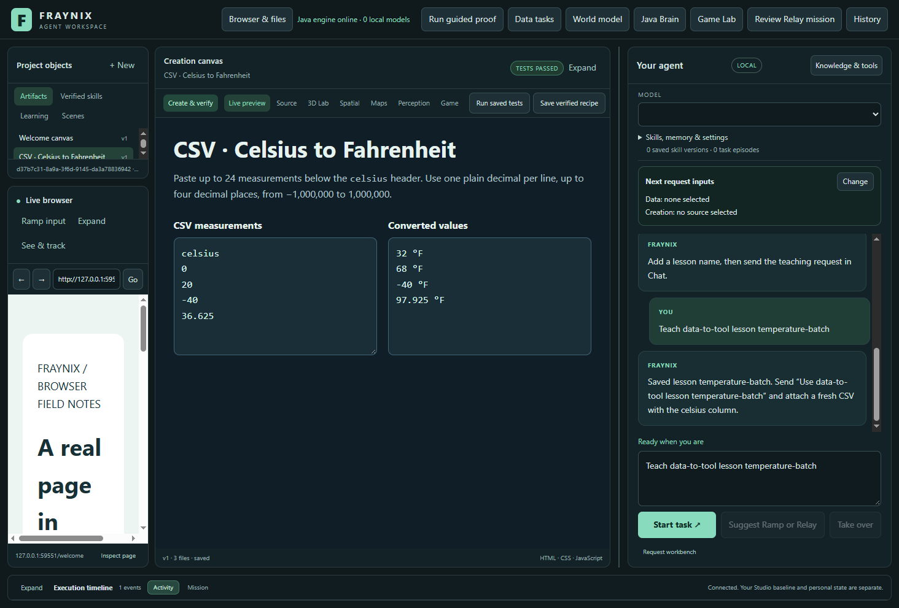
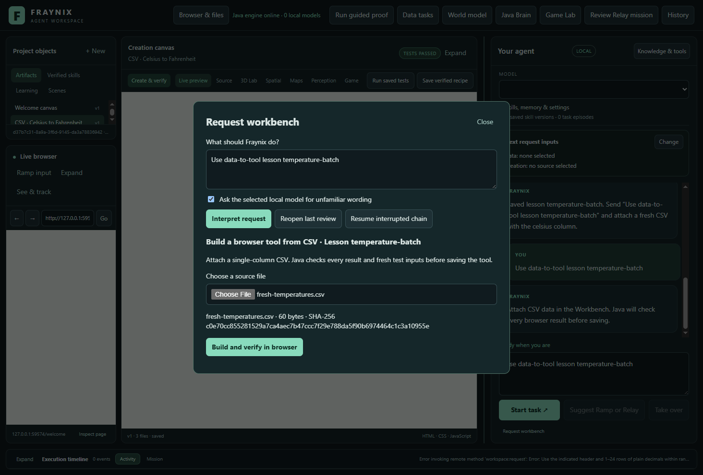
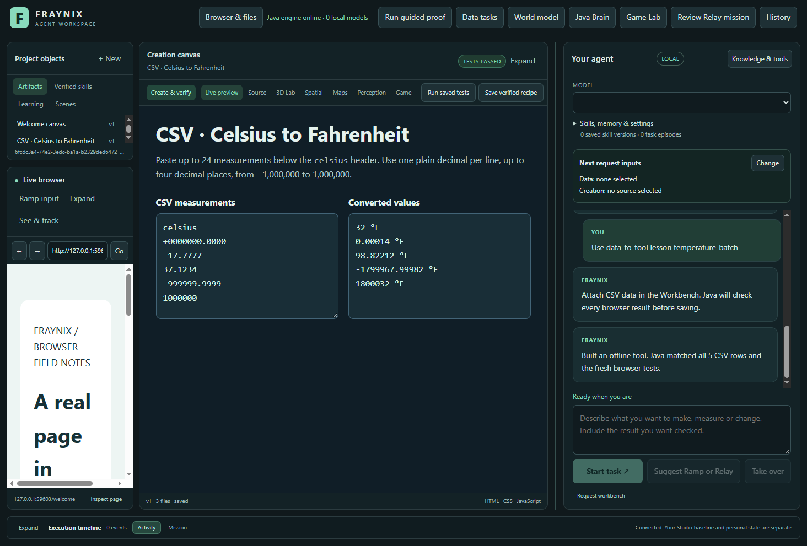

Teach Fraynix to build a checked tool from data
Teach a named CSV conversion lesson in Chat, attach fresh rows and build an offline browser tool. Java verifies the generated tool with both the input data and unseen measurements.

Chat saves the named lesson from a verified CSV tool

Workbench reviews a different CSV under the saved lesson

Canvas shows the new verified tool and its results
System files
Open source